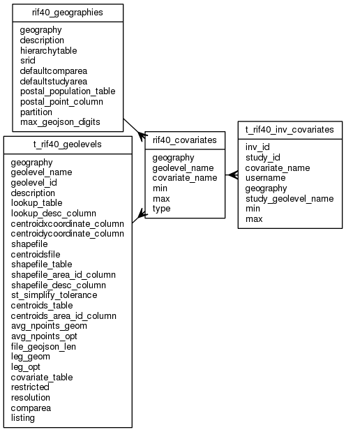

| Table: rif40.rif40_covariates | |||
| RIF multiple covariates | |||
| Size: medium, Select frequency: medium, Update frequency: medium | |||
| Columns | |||
| Name | Type | Constraints | Description |
| geography | VARCHAR (50) | NOT NULL | Geography (e.g EW2001) |
| geolevel_name | VARCHAR (30) | NOT NULL | Name of geolevel. This will be a column name in the numerator/denominator tables |
| covariate_name | VARCHAR (30) | NOT NULL | Covariate name. This will be a column name in RIF40_GEOLEVELS.COVARIATE_TABLE |
| min | float8 (17, 17) | NOT NULL | Minimum value |
| max | float8 (17, 17) | NOT NULL | Maximum value |
| type | float8 (17, 17) | NOT NULL | TYPE of covariate (1=integer score/2=continuous variable). Min < max max/min precison is appropriate to type. Continuous variables are not currently supported. Integer scores can be a binary variable 0/1 or an NTILE e.g. 1..5 for a quintile. |
| Primary key | |||
| Name | Columns | Description | |
| rif40_covariates_pk | geography, geolevel_name, covariate_name | ||
| Foreign keys | |||
| Name | Columns | Referenced table | Description |
| rif40_covariates_geog_fk | geography | rif40_geographies | |
| rif40_covariates_geolevel_fk | geography, geolevel_name | t_rif40_geolevels | |
| Incoming foreign keys | |||
| Name | Columns | Referencing table | Description |
| t_rif40_inv_cov_cov_name_fk | geography, study_geolevel_name, covariate_name | t_rif40_inv_covariates | |
| Grants | |||
| Role | Actions | ||
| rif_user | select | ||
| rif_manager | select, insert, delete, update | ||
| rif40 | select, references, insert, delete, update | ||
